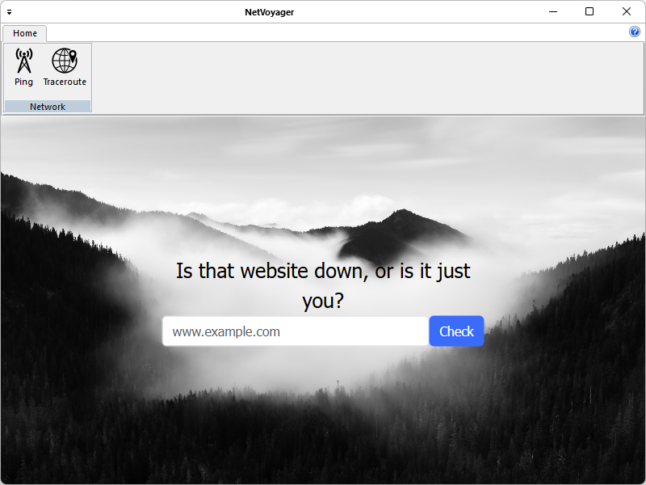
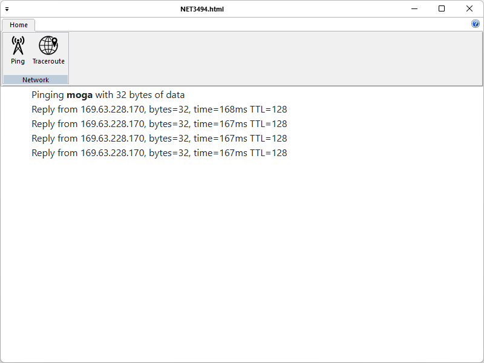
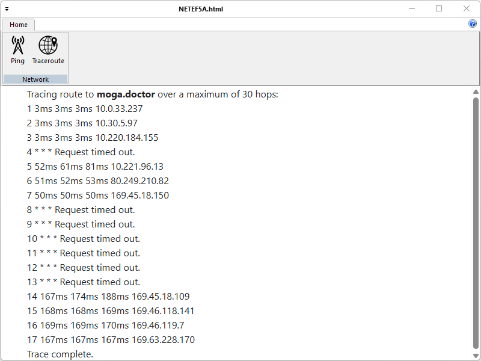

NetVoyager is a lightweight network diagnostics app that lets users quickly assess connectivity and trace routes. With built-in ping and traceroute tools, it helps identify latency issues, unreachable hosts, and visualize packet paths. Ideal for IT pros, engineers, and curious users, with a clean UI and real-time results. NetVoyager is written in C++ and uses pure Win32 API and STL which ensures a higher execution speed and smaller program size. By optimizing as many routines as possible without losing user friendliness, NetVoyager is trying to reduce the world carbon dioxide emissions. When using less CPU power, the PC can throttle down and reduce power consumption, resulting in a greener environment. I hope you enjoy NetVoyager as much as I enjoy coding it!
The installer will likely require Administrative privileges in order to install NetVoyager (and later, to update NetVoyager or install or update plugins, or anything else that requires writing to the installation directory). If you do not have Administrative privileges, you either need to tell the installer to use a location where you do have write permission (though that may still ask for Administrator privileges), or you may choose not use the installer and instead run a portable edition from a directory where you have write permission.
These instructions will allow you to run a portable or mini-portable (also called “minimalist”), without requiring administrative privileges.
The portable zip edition of NetVoyager can be removed by deleting the directory they came in. If you manually set up file associations or context-menu entries in the OS, it is your responsibility to remove them yourself.
The NetVoyager menu features the application's most important functions:


These are ideas for future versions of NetVoyager, not commitments, and none of them has a release date. If you would like to work on one of them, please see the next section and open or comment on an issue first.
Today a run exists only as formatted text in the results page. Exporting will let you save it, compare it over time, attach it to a ticket or open it in a spreadsheet.
null for missing values) and CSV (RFC 4180, UTF-8 with a byte order mark so that Excel opens it correctly, and . as the decimal separator whatever your regional settings are).null (JSON) round-trip time, while a reply shown as <1ms is exported as 0.Text that comes from the network or from the system, such as host names and error messages, is escaped for each format, and CSV text cells that a spreadsheet could interpret as a formula are neutralized. Command-line or scheduled export, XLSX/XML and exporting while a run is still in progress are out of scope for a first version.
Done when: the files open cleanly in a spreadsheet and in a JSON parser, the values match the screen for IPv4 and IPv6 runs of both probes, and timeouts are never shown as 0.
The window and the results page stay light whatever the Windows app mode is, and some parts of the interface, such as the links in the About dialog, cannot be reached from the keyboard.
Done when: every command is reachable from the keyboard, results are exposed as a table, automated accessibility checks report no failures, the application is readable in both themes and under a high-contrast theme, and the theme follows Windows at startup and when it changes.
The repository has no automated build yet. NetVoyager has four build configurations (Debug and Release for x64 and Win32) and needs a specific toolchain (Visual Studio 2026, MSVC v145 and statically linked MFC), so a change that breaks one configuration is easy to miss.
NetVoyager.vcxproj for Debug|x64, Release|x64, Debug|Win32 and Release|Win32. MSBuild cannot build the installer project, so the MSI stays a manual step until the installer moves to something MSBuild can build.NetVoyager.exe and WebView2Loader.dll are uploaded as workflow artifacts.Done when: a pull request that breaks any of the four configurations shows a failing check, and a successful run on the default branch produces downloadable Release artifacts.
As noted in the Contributing Rules for NetVoyager, all Pull Requests need to be attached to a issue on GitHub. So the first step is to create an issue which requests that the functionality be improved (if it was already there) or added (if it was not yet there); in your issue, be sure to explain that you have the functionality definition ready, and will be submitting a Pull Request. The second step is to use the GitHub interface to create the Pull Request from your fork into the main repository. The final step is to wait for and respond to feedback from the developers as needed, until such time as your PR is accepted or rejected.